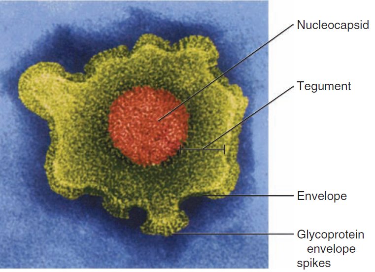

Herpes Simplex Virus (HSV)
Sopheap Oeng
31 Oct 2025
Objectives
After this session the students should be able to:
- List the main characteristics and morphology of HSV
- Describe the stages of HSV multiplication
- Explain the routes of HSV transmission
- Identify target organs and types of HSV infection
- Summarize the clinical manifestations of HSV infection
- Outline diagnostic techniques and treatment options for HSV
Characteristics of HSV
- Icosahedral capsid (162 capsomers, 6 proteins)
- Envelope with glycoproteins
- The genome: large, linear, double-stranded DNA (~152 kbp, high GC content), encoding ~80 proteins
- Ubiquitous but sensitive to acid, solvents, detergents, and drying
- Family: Herpesviridae, subfamily: Alphaherpesvirinae, genus: Simplexvirus
- HSV-1 (oral, above the waist) and HSV-2 (genital, below the waist)
Characteristics of HSV

Multiplication
- In vitro: HSV infects permissive cells (human diploid, monkey kidney, amniotic fluid)
- In vivo: lytic infection in fibroblasts/epithelial cells; latent infection in neurons
- Entry: Glycoproteins bind glycosaminoglycans, fuse membranes, uncoat at nuclear pore
- Viral gene expression occurs in 3 phases:
- Immediate early (α): gene regulation
- Early (β): replication proteins
- Late (γ): structural proveins
HSV multiplication
Epidemiology
- Reservoir: humans are the only natural host
- Disease/viral factors:
- HSV establishes lifelong latency after initial infection
- Reactivation leads to recurrent disease and continued transmission
- Asymptomatic viral shedding is common and contributes to spread
- Transmission:
- Direct contact with mucosal surfaces or broken skin
- Spread via saliva, genital secretions, or contact with lesion fluid
- Transmission occurs through oral, genital, ocular routes, and skin abrasions
- HSV-1 is primarily transmitted orally; HSV-2 is mainly transmitted sexually, but both can infect either site
Epidemiology
- Who is at risk?
- Children: primary HSV-1 infection (oral, mucosal, ocular)
- Sexually active adults: primary HSV-2 infection (genital)
- Healthcare workers (physicians, nurses, dentists): risk of herpetic whitlow from contact with oral/genital secretions
- Immunocompromised individuals and neonates: increased risk for severe, disseminated, or life-threatening HSV disease
Pathogenesis
- Acute Infection:
- HSV infects mucoepithelial cells, causing local lytic infection and inflammation
- Virus spreads to sensory neurons and ganglia (trigeminal for HSV-1, sacral for HSV-2)
- Latent Infection:
- HSV remains dormant in sensory ganglia
- Reactivation (triggered by stress, immunosuppression, etc.) causes recurrent lesions at the original site
Pathogenesis (cont.)
- Sites of Latency:
- HSV-1: trigeminal ganglion
- HSV-2: sacral ganglion
Pathogenesis (cont.)
Immunity
Innate immunity: interferons and natural killer (NK) cells help control early HSV infection
Cell-mediated immunity: T helper 1 (TH1) and cytotoxic T cells (CD8+) destroy infected cells and are essential for recovery
Antibody response: antibodies neutralize free virus and limit its spread, but do not eliminate latent virus
Immunopathology: immune response causes inflammation and symptoms
Immunodeficiency: people with weak immune systems may have severe, recurrent, or widespread HSV infections
Clinical manifestations: HSV-1
- Young children: gingivostomatitis (painful oral ulcers, fever, feeding difficulties)
- Adults: pharyngitis or tonsillitis
- Skin lesions: vesicular eruptions that progress to ulcers, commonly around mouth and face
- Systemic symptoms: fever, malaise, myalgia
- Other findings: cervical lymphadenopathy
Clinical manifestations: HSV-2
- Genital herpes: painful vesiculo-ulcerative lesions on external genitalia, perineum, or anus
- Lesion progression: vesicles → pustules → ulcers
- Systemic symptoms: fever, malaise, myalgia
- Other findings: dysuria, inguinal lymphadenopathy

Clinical manifestations: Ocular
- Ocular infection:
- Primarily caused by HSV-1 (except in neonates, where HSV-2 may be involved)
- Keratoconjunctivitis: infection of the cornea and conjunctiva
- Symptoms: pre-auricular lymphadenopathy, photophobia, eyelid edema, tearing (lacrimation)
- Retinitis: may develop years after initial infection
- HSV is a leading cause of infectious blindness due to corneal or retinal involvement
Clinical manifestations: CNS Involvement
- Central nervous system (CNS):
- HSV encephalitis: severe, potentially fatal if untreated
- Presents with fever, altered mental status, seizures, and focal neurological deficits
Clinical manifestations
Diagnostic virus isolation
- Virus isolation (cell culture): gold standard for HSV diagnosis
- Sample: collect from active lesions (vesicle fluid, swab)
- Cell lines: Vero cells, human fibroblasts
- Cytopathic effects: syncytia, ballooning cytoplasm, Cowdry type A inclusions
- Limitations: needs specialized lab and viable virus
Additional diagnostic methods
- Immunological tests: detect viral antigens (immunofluorescence, EIA); rapid but less sensitive than PCR
- Serology: detects IgM (recent) and IgG (past) antibodies; differentiates HSV-1/HSV-2; useful for primary infection and epidemiology
- PCR: highly sensitive for HSV DNA; preferred for neurological cases; does not confirm infectivity
Diagnostic virology
Diagnostic virology summary
- Primary infection: viral isolation or serology (IgM/IgG)
- Encephalitis: PCR of CSF (most sensitive)
- Retinitis: PCR of ocular fluids
- Pregnancy: viral culture if no HSV history
- Neonates: culture or PCR from lesions/blood/CSF
PCR is preferred for neurological/ocular cases; serology helps differentiate HSV-1 vs. HSV-2.
Treatment
- Acyclovir (acycloguanosine): a guanine analog that selectively inhibits HSV DNA synthesis
- Other antivirals: valacyclovir and famciclovir are oral prodrugs with improved bioavailability, used for HSV infections
- Mechanism: these drugs block viral DNA polymerase, preventing viral replication and spread
- Resistance: may occur in immunocompromised patients due to mutations in thymidine kinase or DNA polymerase
Treatment guidelines
- Initial episode (genital herpes): oral acyclovir, valacyclovir, or famciclovir for 7–10 days
- Recurrent episodes: short-course therapy (1–5 days) at symptom onset
- Severe or disseminated infection: intravenous acyclovir
- Ocular or CNS involvement: prompt IV acyclovir is essential
- Neonatal HSV: IV acyclovir for 14–21 days
Treatment duration may be extended if healing is incomplete after 10 days.
Prevention
- No vaccine available
- Avoid contact with active lesions or secretions
- Practice safe sex (condoms)
- Do not share personal items
- Screen pregnant women; give antivirals if needed
- Treat at-risk newborns with Acyclovir
Quiz
What type of genome does Herpes Simplex Virus (HSV) have?
- (+)ssRNA
- dsRNA
- dsDNA
- ssDNA
What is the most common route of transmission for HSV-1?
- Sexual contact
- Blood transfusion
- Oral contact (saliva)
- Fecal-oral
What is the primary site of latency for HSV-1?
- Sacral ganglia
- Dorsal root ganglia
- Trigeminal ganglia
- Cervical ganglia
Which antiviral drug is commonly used to treat HSV infections?
- Zidovudine
- Oseltamivir
- Acyclovir
- Ribavirin
Which diagnostic method is considered the gold standard for HSV detection?
- PCR
- Serology
- Virus isolation in cell culture
- Immunofluorescence
References
1.
Sokdalis C. Virology training materials. 2024.
2.
Hulo C, Masson P, de Castro E, Le Mercier P. Vol. 39, Nucleic Acids Research. 2011 [cited 2025 Oct 24]. p. D708–13 ViralZone: A knowledge resource to understand virus diversity. Available from: https://viralzone.expasy.org/
3.
Louten J. Essential human virology. London, UK; San Diego, CA, USA; Cambridge, MA, USA; Oxford, UK: Elsevier (Academic Press); 2016.
4.
Das S, Saha R. Microbiology practical manual, third edition. New Delhi, India: CBS Publishers & Distributors Pvt Ltd; n.d.
5.
Mishra B. Textbook of medical virology, second edition. New Delhi, India: CBS Publishers & Distributors Pvt. Ltd.; 2022.
6.
Tille PM. Bailey & scott’s diagnostic microbiology, 14th edition. 14th ed. St. Louis, Missouri, USA: Elsevier; 2017.
7.
Kudesia G, Wreghitt T. Clinical and diagnostic virology. Cambridge, UK; New York, USA; Melbourne, Australia; Madrid, Spain; Cape Town, South Africa; Singapore; São Paulo, Brazil: Cambridge University Press; 2009.
8.
Knipe DM, Howley PM. Fields virology: Emerging viruses. 7th ed. Vol. 1. Wolters Kluwer; 2022.